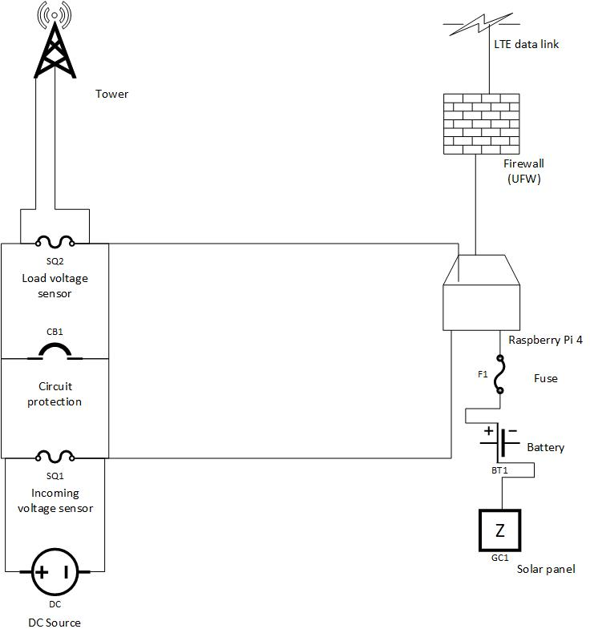
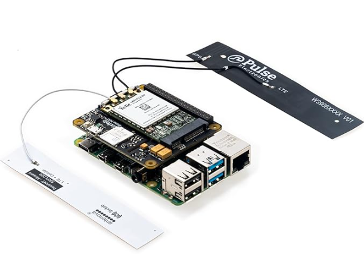
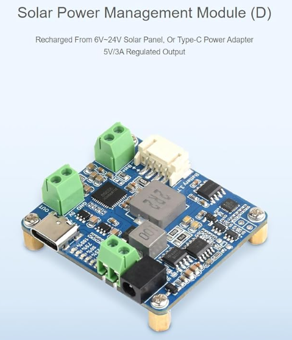

Innovation Claim
An integrated power and fiber distribution unit allows for efficient use of cabling and tower space. This lowers infrastructure costs, time to deploy, and allows for site expansion with minimal investments. The ability to diagnose power circuit issues from the ground reduces the need for climbers to ascend the tower, increasing site safety and further reducing costs.
Project Description
This project aims to add advanced features to an existing innovative prototype. This prototype has been a work in progress to fill a void encountered while designing and standing up fixed wireless sites. This is a solo project where I will wear all the hats. I will need to enhance my knowledge of microcontrollers, programming, and how to secure IoT devices. Between self-study and coursework, the timeline to develop the necessary skills should align with a natural progression of the SIP framework and allow for an MVP by the end.
Visuals
The company I work for has been rapidly expanding our service using fixed wireless. I have been trying to optimize site design, with an eye towards site expansion in the future. This image is the first iteration of a solution I designed to fill a void, efficient fiber distribution near the base node.

This image showcases further innovation on the idea. Here I have added DC circuit protection and distribution. This dramatically lowered costs for this build by eliminating the need for up to six individual copper runs for the full span of the tower.
Other Materials
These images illustrate the idea for the layout of the monitoring and reporting system. Upon feedback from my SME, I have decided upon building out an LTE modem for data communication. I am also planning to build out a solar and battery system for powering the microcontroller. These two innovations would allow this solution to report, even in conditions that take the site down. This offers redundancy that provides several benefits to security and network diagnostics.
This image is for illustrative purposes. It shows a Raspberry Pi4 with an LTE hat loosely attached. I plan to use a similar configuration, and I am still researching enclosure or mounting options.
This image shows a Solar Power Manager, which will be required to manage charge state for the battery that supplies the microcontroller with power. For the purposes of the prototype, a smaller battery will be used than what would be required in a production unit. For continuous use and factoring the usual solar variables such as hours of sun exposure, an eighty amp hour battery would be most suitable. The initial protypes will not have or need that much reserve. It will be much more cost effective to use a small pack while testing
Innovation Brief - Part 1
You can download the full Innovation Brief here:
Download Innovation BriefYou can view my SIP Pitch here:

You can view my design prototype video here
You can view my SIP Pitch here: